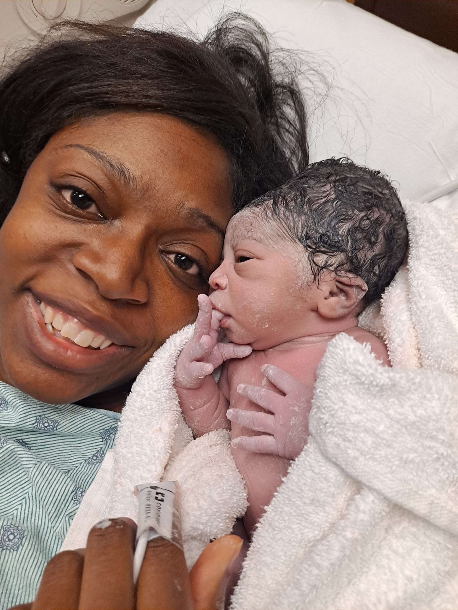
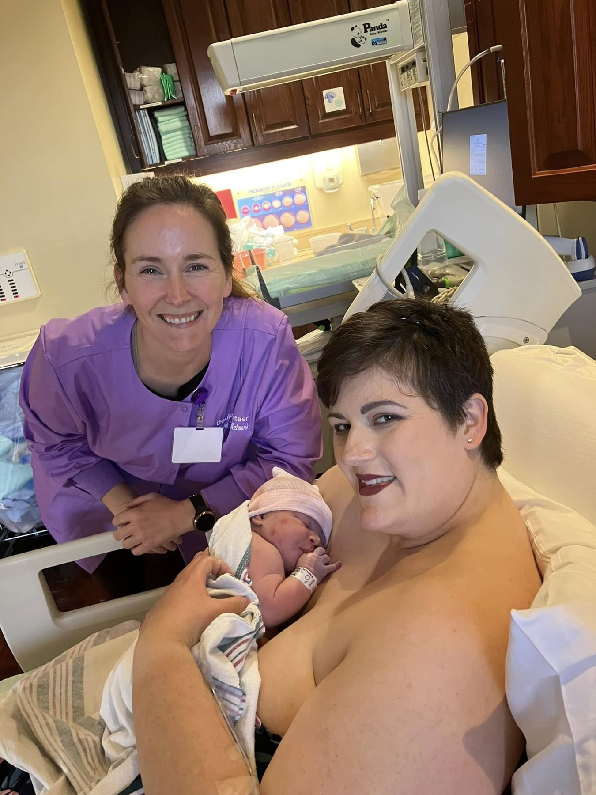
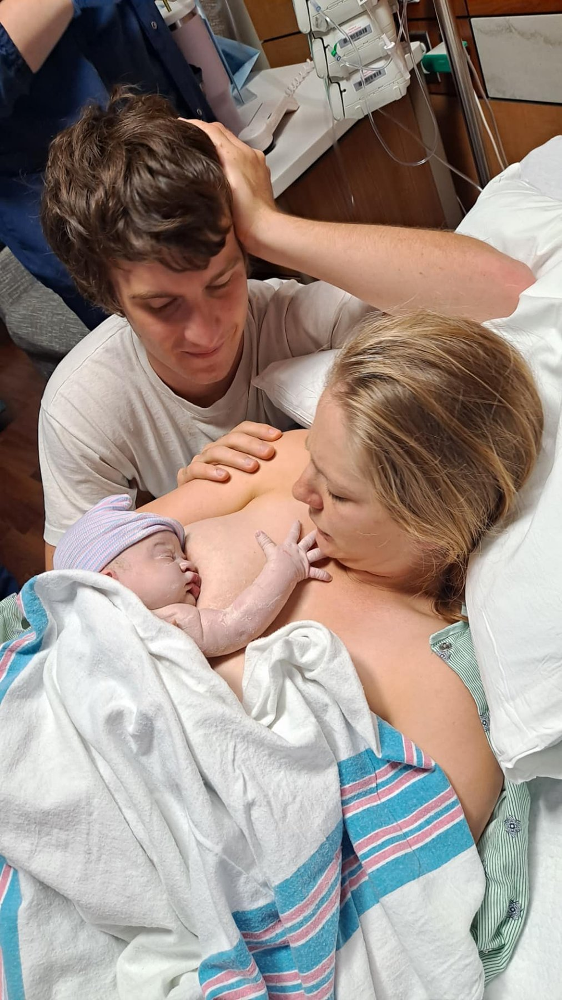

A doula by your side, at no cost.
Mary's Hands Network provides free doula services to any mom who applies. Our services are limited by the availability and location of our volunteers, but every mother who applies is cared for to the fullest extent we are able.
Your doula team will be on call around your due date. They will follow up within 72 hours of delivery, with one to two visits between birth and 8 weeks postpartum. After your 6–8 week visit, our administrative team provides continued check-ins at 4, 6, and 12 months.
A 5-minute walkthrough of the application.
From submitting your application to creating your Kiip client account, uploading your insurance card, signing your forms, and scheduling your onboarding visit with a staff doula. Every step, in order.
Prefer to start now? Begin your application →
Your journey with us.
From match to 8 weeks postpartum. Tap any stage to see what to expect.
Apply & Onboard
Application & Onboarding
Complete the application, sign agreements, and meet with a staff doula.
Team Match
Team Match
Matched with two volunteer doulas within a week, introduced virtually.
Pre-Birth Visits
Pre-Birth Visits
Two in-person visits to build your birth vision, practice comfort measures, and plan.
Birth & Postpartum
Labor, Birth & Postpartum
On-call support during your birth month, 72-hour check-in, up to 8 weeks of follow-up.
From the families we serve.



In their own words.
My doula stayed with me through thirty hours of labor. She knew when to speak, when to press on my back, and when to just be there. I had the birth I hoped for because she was beside me.Client, Baton Rouge
I did not know a doula could be free. My team showed up to my postpartum visits, helped me with breastfeeding, and checked on me when I was alone. They treated me like family.Client, New Orleans
They helped me ask the questions I did not know how to ask. I felt heard by my doctors for the first time. That alone changed my whole experience.Client, Lafayette
A map, not a rigid plan.
Building Your Birth Vision is a simple guide to help you explore your options, share your hopes, and start meaningful conversations with your care team.
Think of it as a map for your birth journey, a tool to prepare while staying flexible when things change.
Download the Guide (PDF)
When you need us, day or night.
Every MHN client gets the Doula Hotline at her first visit. If you can't reach your doula team, the hotline connects you straight to MHN staff who will alert your team, activate backup coverage, or give you immediate guidance.
Not a client yet? Call or text the same number to ask a question, request a doula, or just talk to someone who understands.
You never need an appointment. You never need to apologize for calling.
If your story takes a different turn, we are still here.
Loss, complications, financial hardship, food insecurity. Your journey may not be a straight line. Whatever your story is, you are not alone.
Bereavement doula support
Our bereavement-trained doulas walk alongside families through miscarriage, stillbirth, medical termination, and neonatal loss. Free, confidential, no timeline for reaching out.
Community resources in Louisiana
Free and reduced-cost services for food, housing, transit, childcare, mental health, and legal aid. Search a national database by your ZIP code and connect directly with providers near you.
You belong here.
Whether you are expecting your first child, your fifth, or have just experienced loss, every mother in Louisiana has a place at Mary's Hands.
Apply for a Doula Call or text (225) 424-7532